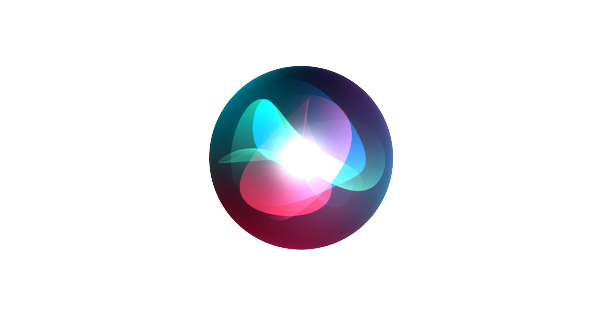
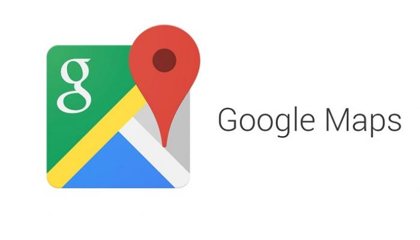

تعرّف على أبرز التطبيقات الذكية التي نستخدمها في حياتنا اليومية:
1. المساعدات الصوتية (مثل Siri): برامج ذكية تفهم الأوامر الصوتية، وتجيب عن أسئلتك، وتساعدك في ضبط المنبهات وإجراء المكالمات.

2. توصيات المحتوى (مثل Netflix أو YouTube): أنظمة ذكاء اصطناعي تحلل تفضيلاتك وما تشاهده لتقترح عليك فيديوهات أو أفلاماً تناسب ذوقك تماماً.
3. الخرائط وأنظمة الملاحة (مثل Google Maps): تطبيقات تعتمد على الذكاء الاصطناعي لتوقع حركة المرور، واكتشاف الازدحام، واقتراح أسرع الطرق للوصول إلى وجهتك.
